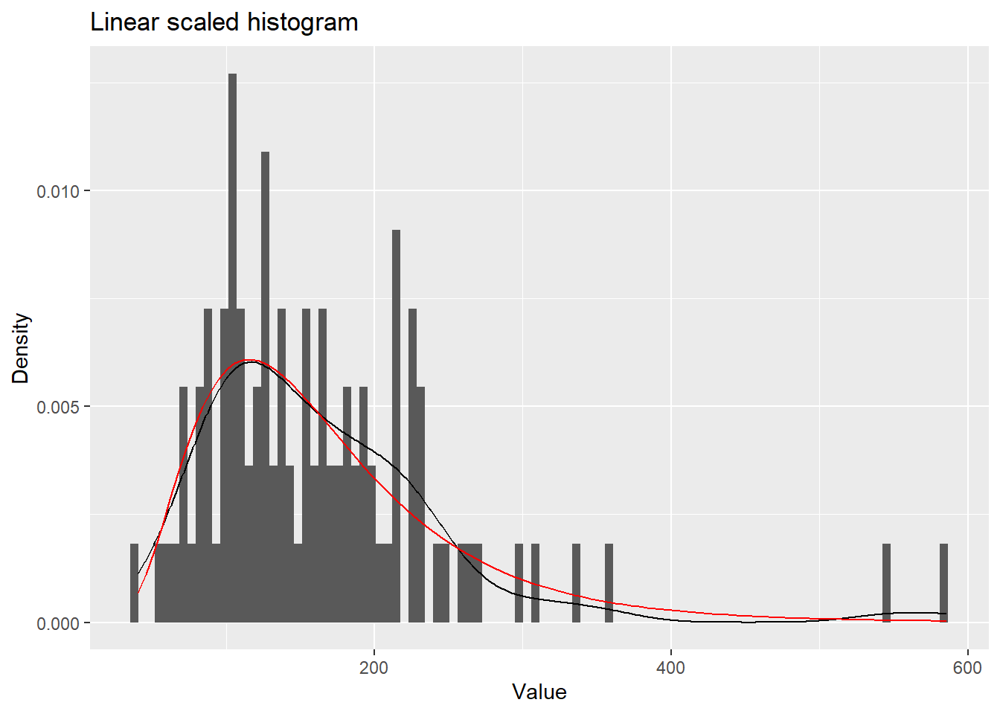
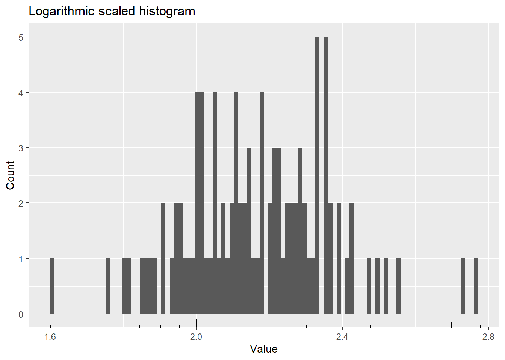
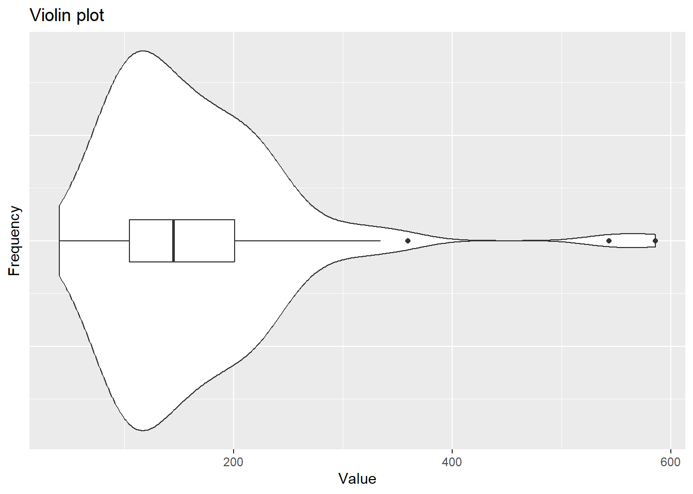

#Loading packages
library(ggplot2)Exercise1_ptB
This is a Quarto document for exercise 1 part B.
Loading the relevant packages:
Creating the Sampled Data
First sample 100 values from a log-normal distribution with a mean of 5 and a standard deviation of 0.5.
sample = rlnorm(100, meanlog = 5, sdlog = 0.5)The mean of the sampled data is 163.6318704.
The standard deviation of the sampled data is 85.8959632.
Making the plots
Create a DataFrame for ggplot to use:
df = data.frame(sample)Now for plotting the graphs…
Histograms
Linear scale
For this plot I have also included the density plots for the original population in red and the sample in black.
ggplot(df, aes(sample)) +
geom_histogram(bins = 100, aes(y = after_stat(density))) +
ggtitle("Linear scaled histogram") +
xlab("Value") + ylab("Density") +
geom_density() +
#plot lognormal function for comparison. Use dlnorm i
stat_function(fun=dlnorm, args = list(meanlog = 5, sdlog = 0.5), colour = 'red')
Logarithmic scale
df$logCounts <- log10(sample)ggplot(df, aes(logCounts)) +
geom_histogram(bins = 100) +
ggtitle("Logarithmic scaled histogram") +
xlab("Value") + ylab("Count") +
annotation_logticks(sides='b')
Violin Plot
ggplot(df, aes(sample, 1)) +
geom_violin() +
ggtitle("Violin plot") +
xlab("Value") + ylab("Frequency") +
geom_boxplot(width = 0.1) +
theme(axis.text.y = element_blank(),
axis.ticks.y = element_blank())